library(readr)
library(dplyr)
library(forcats)
library(lubridate)
library(tidyr)
library(stringr)
library(pdftools)
library(janitor)
library(httr2)
library(excessmort)
library(jsonlite)
library(purrr)20 Problem Set 2
Introduction
For this assignment, you’ll delve into data wrangling, statistical inference, and linear modeling that was used by academics to gain a deeper understanding of the efforts made to estimate the indirect death toll in Puerto Rico following Hurricane María. Begin by reviewing this comprehensive timeline and summary. Initially, we’ll use data wrangling techniques to extract information from documents released by organizations that had early access to the mortality registry data. Following that, we’ll work with the mortality registry data that has since been publicly disclosed by the government. To determine mortality rates, it’s essential to acquire data on population size, categorized by age and sex. We’ll achieve this by utilizing APIs provided by the US Census.
These are the libraries you will need and the only ones you are allowed to load
You don’t need these but we will allow you to load them:
library(ggthemes)
library(ThemePark)
library(ggrepel)Reminders:
- Add a title to all your graphs.
- Add a label to the x and y axes when not obvious what they are showing.
- Think about transformations that convey the message in clearer fashion.
20.1 Preparation
Create a directory for this homework. In this directory create two subdirectories: data and rdas. You will also create a get-population.R file where you will have the code to download and wrangle population data from the US Census.
20.2 Wrangling
- In December 2017 a preprint was published that includes data from the mortality registry. It is a Word document that you can download from https://osf.io/preprints/socarxiv/s7dmu/download. Save a PDF copy of this document to your data directory.
url <- "https://osf.io/preprints/socarxiv/s7dmu/download"
fn <- tempfile(fileext = ".docx")
download.file(url, destfile = fn)
system2("open", fn)
# save as PDF- Read in the PFD file into R and create a data frame with the data in Table 1 of the paper. The data frame should be tidy with columns
months,year, anddeaths. Your data frame need not include the confidence intervals or averages.
filename <- "data/santoslozada-howard-2017-preprint.pdf"
txt <- pdf_text(filename)[4]
tmp <- str_split(txt, "\n")[[1]][2:14] |>
str_replace_all("\\s([A-Z])", "\\1") %>%
str_replace("\\s-\\s", "-") %>%
str_split("\\s+", simplify = TRUE)
tmp[1,1] <- "month"
dat <- tmp |>
row_to_names(1) |>
as.data.frame() |>
select(month, `2010`:`2016`) |>
pivot_longer(-month, names_to = "year", values_to = "deaths") |>
mutate(month = match(month, month.name),
year = factor(year), deaths = parse_number(deaths))- For each month compute the average and a 95% confidence interval to reproduce Figure 3 in the preprint. Make sure to show the month names on the x-axis, not numbers. Hint: Save the graph to an object to make an upcoming exercise easier.
p <- dat |> group_by(month) |>
summarize(avg = mean(deaths), sd = sd(deaths), n = n(),
lower = avg - qt(0.975, n - 1)*sd/sqrt(n),
upper = avg + qt(0.975, n - 1)*sd/sqrt(n)) |>
ggplot(aes(month, avg, ymin = lower, ymax = upper)) +
geom_errorbar() +
geom_point(color = "red") +
scale_x_continuous(breaks = 1:12, labels = month.abb) +
labs(title = "Average deaths and 95% confidence intervals by month in Puerto Rico, 2010-2016",
y = "Mean and 95% C.I.", x = "Month") +
theme_bw()
p 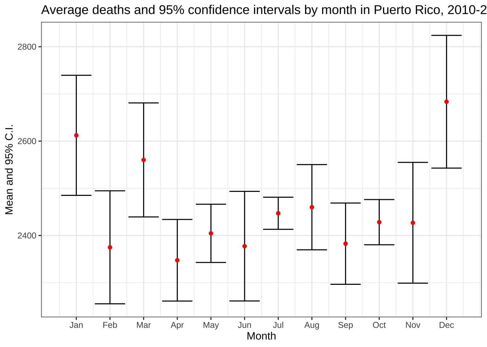
- The model here seems to be that the observed death for month \(i\) and year \(j\) is
\[ Y_{ij} = \mu_i + \varepsilon_{ij} \]
with \(\text{Var}(\varepsilon_{ij}) = \sigma^2_i\). The preprint reports the September and October 2017 deaths as 2,987 and 3,043. Create a data frame called dat_2017 with these two values and include an estimate for the standard error of this random variable. Hint: Look at the model and use data from 2010-2016 to estimate \(\sigma_i\).
dat_2017 <- dat |> filter(month %in% c(9,10)) |>
group_by(month) |>
summarize(sd = sd(deaths)) |>
bind_cols(data.frame(avg = c(2987, 3043))) |>
mutate(upper = avg + 1.96*sd, lower = avg - 1.96*sd)- Make a plot now that includes the two points for 2017 and the 1.96 standard errors bars around them. Are the deaths statistically significantly different than the expected based on 2010-2016 data?
p + geom_point(data = dat_2017, color = "blue") + geom_errorbar(data = dat_2017) +
labs(subtitle = "Observed counts for 2017 are in blue")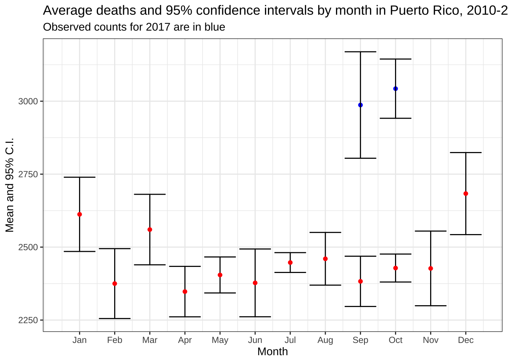
- On December 8, 2017 the New York Times publishes an article with daily counts. They share the data that was provided to them by the Mortality Registry. It is PDF you can obtain here. Read the PDF into R and extract the daily counts. Save the results to a data frame called
datwith columnsdataanddeaths. Make sure the data frame is ordered by date.
url <- "https://github.com/c2-d2/pr_mort_official/raw/master/data/Mortalidad-RegDem-2015-17-NYT-part1.pdf"
pdf <- pdf_text(url) |> str_split("\n")
dat <- lapply(pdf, function(s){
s <- str_trim(s)
s <- str_remove_all(s, "Registro Demográfico - División de Calidad y Estadísticas Vitales")
header_index <- str_which(s, "2015")[1]
tmp <- str_split(s[header_index], "\\s+", simplify = TRUE) |> str_remove_all("\\*") |>
str_replace_all("Y(201\\d)", "\\1")
month <- tmp[1]
header <- tmp[-c(1,5)]
tail_index <- str_which(s, "Total")
n <- str_count(s, "\\d+")
out <- c(1:header_index, ## take out first lines
which(n <= 3), ## lines with just one number (plot y-axis ) or 3 (legend)
which(n >= 20 & n <= 31), ## take out lines with numbers from plot x-axis
tail_index:length(s)) ## take out lines at end
if (month == "FEB") {
feb29 <- s[str_detect(s, "^29\\s+")] |> str_remove("29\\s+") |> parse_number()
}
s <- s[-out] |>
str_remove_all("[^\\d\\s]") |> ## remove things that are not digits or space
str_trim() |>
str_split_fixed("\\s+", n = 6) ## split by any space
if (month == "DEC") {
header <- header[1:2]
s <- s[,1:3]
} else {
s <- s[,1:4]
}
colnames(s) <- c("day", header)
s <- s |> as_tibble() |>
mutate(month = month, day = as.numeric(day)) |>
pivot_longer(-c(day, month), names_to = "year", values_to = "deaths") |>
mutate(deaths = as.numeric(deaths), month = str_to_title(month)) |>
mutate(month = if_else(month == "Ago", "Aug", month)) |>
mutate(month = match(month, month.abb)) |>
mutate(date = make_date(year, month, day)) |>
select(date, deaths) |>
arrange(date)
if (month == "FEB") {
s <- bind_rows(s, data.frame(date = make_date(2016, 2, 29), deaths = feb29))
}
return(s)
})
dat <- do.call("bind_rows", dat) |> arrange(date)- Plot the deaths versus dates and describe what you see towards the end for 2017.
dat |> ggplot(aes(date, deaths)) + geom_point() +
labs(title = "Deaths extracted from PDF shared with NYT", x = "Date", y = "Deaths")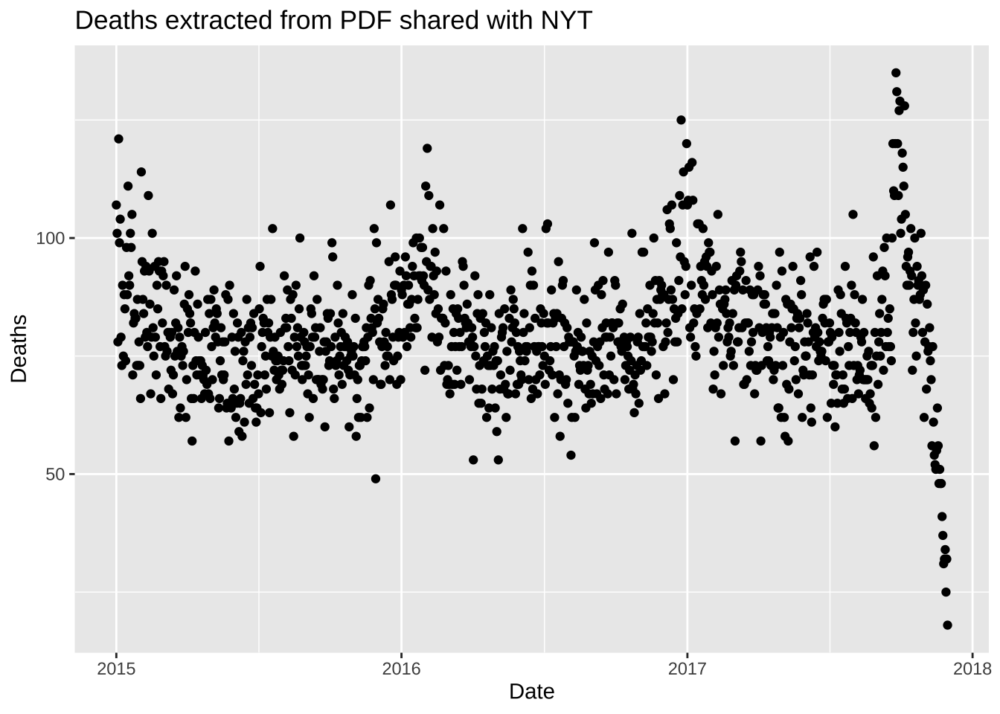
- The reason you see a drop at the end is because it takes time to officially register deaths. It takes about 45 days for 99% of the data to be added. Remove the last 45 days and remake the plot, but this time showing deaths against day of the year (1 through 365 or 366) with color highlighting what happened after the hurricane. Do not include a legend.
dat |> filter(date <= max(date) - days(45)) |>
ggplot(aes(yday(date), deaths, color = date < make_date(2017, 9, 20))) +
geom_point(show.legend = FALSE) +
theme_bw() +
labs(title = "Deaths extracted from PDF shared with NYT",
subtitle = "Data for days after the hurricane are shown in red", x = "Date", y = "Deaths")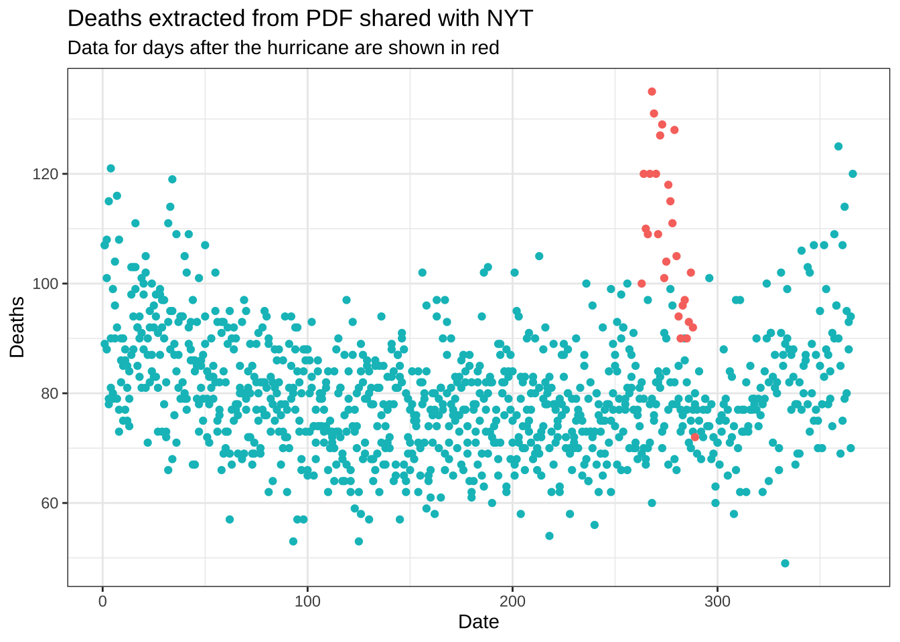
20.3 US Census APIs
In June 2018, data was finally made public. This dataset gives you deaths by age group and sex obtained more recently from the Mortality Registry. In preparation for the analysis of these data, we will obtain population estimates from the US Census by age and gender.
We will be using two different APIs as that is how the Census makes the data available. Important to note that in one of these APIs, all ages 85 or above are grouped into one group. Observe that we use estimates as of July 1st.
If you wish to skip this section (though you will lose points), you can obtain the already wrangled population data here.
First step is to obtain a census key. You can request one here https://api.census.gov/data/key_signup.html. Once you have a key create a file in your directory called
census-key.Rthat simply defines the variablecensus_keyto be your personal key. Do not share this key publicly. The quarto file you turn in should not show your census key, instead it should source a file calledcensus-key.Rto define the variable. We will have a file on our end with our key so your script can knit.Once you have your key you can use the
httr2package to download the data directly from the Census data base. We will start downloading the intercensus data from 2000-2009 (data dictionary here). We will download it only for Puerto Rico which has region ID 72. The following code downloads the data.
url <- "https://api.census.gov/data/2000/pep"
source("census-key.R")
endpoint <- paste0("int_charage?get=POP,SEX,AGE,DATE_&for=state:72&key=", census_key)
response <- request(url) |>
req_url_path_append(endpoint) |>
req_perform() The data is now included in response and you can access it using the resp functions in httr2. Examine the results you obtain when applying resp_body_string. Write code to convert this into a data frame with columns names year, sex, age, and population and call it pop1. Hint: Use the function fromJSON from the jsonlite package. The functions row_to_names and clean_names from the janitor package might also be handy. Use the codebook to understand how the date column relates to year.
pop1 <- response |>
resp_body_string() |>
fromJSON(flatten = TRUE) |>
as.data.frame() |>
row_to_names(1) |>
clean_names() |>
mutate(across(everything(), parse_number)) |>
filter(age != 999 & sex != 0 & between(date , 2, 11)) |>
mutate(sex = factor(sex, labels = c("M", "F")), year = 2000 + date - 2) |>
select(-c(date, state))- Now we will obtain data for 2010-2019. The intercensus data is not available so we will use Vintage 2019 data (data dictionary here). We can follow a similar procedure but with the following API and endpoints:
url <- "https://api.census.gov/data/2019/pep"
source("census-key.R")
endpoint <- paste0("charage?get=POP,SEX,AGE,DATE_CODE&for=state:72&key=", census_key)Download the data and write code to convert this into a data frame with columns names year, sex, age, and population and call it pop2.
response <- request(url) |>
req_url_path_append(endpoint) |>
req_perform()
pop2 <- response |>
resp_body_string() |>
fromJSON(flatten = TRUE) |>
as.data.frame() |>
row_to_names(1) |>
clean_names() |>
mutate(across(everything(), parse_number)) |>
filter(age != 999 & sex != 0 & between(date_code , 3, 12)) |>
mutate(sex = factor(sex, labels = c("M", "F")), year = 2010 + date_code - 3) |>
select(-c(date_code, state)) - Combine the data frames
pop1andpop2created in the previous exercises to form one population data frame calledpopulationand including all year. Make sure the 85+ category is correctly computed on the two datasets. Save it to a file calledpopulation.rdsin your rds.
pop2 <- pop2 |>
mutate(age = if_else(age > 85, 85, age)) |>
group_by(sex, age, year) |>
summarize(pop = sum(pop), .groups = "drop")
population <- bind_rows(pop1, pop2)
#saveRDS(population, file = "rdas/population.rds")20.4 Daily count data
Let’s repeat the analysis done in the preprint but now using 2002-2016 data and, to better see the effect of the hurricane, let’s use weekly instead of monthly and start our weeks on the day the hurricane hit.
You can load the data from the excessmort package.
data("puerto_rico_counts")- Define an object
countsby wranglingpuerto_rico_countsto 1) include data only from 20022017, 2) remove the population column, and 3) to match our population, combine the counts for those 85 and older together.
counts <- puerto_rico_counts |>
filter(between(year(date), 2002, 2017)) |>
select(-population) |>
mutate(agegroup = fct_collapse(agegroup, "85-Inf" = c("85-89", "90-94", "95-99", "100-Inf"))) |>
group_by(date, sex, agegroup) |>
summarize(outcome = sum(outcome), .groups = "drop")- Collapse the population data so that it combines agegroups like
counts. Also change thesexcolumn so that it matchescountsas well.
cuts <- c(seq(0, 85, 5), Inf)
labels <- paste0(head(cuts, -1), "-", tail(cuts, -1) - 1)
#population <- readRDS("rdas/population.rds") |>
population <- population |>
mutate(agegroup = cut(age, cuts, labels = labels, include.lowest = TRUE, right = FALSE),
sex = fct_recode(sex, male = "M", female = "F")) |>
group_by(year, sex, agegroup) |>
summarize(population = sum(pop), .groups = "drop")- Add a population column to
countsusing thepopulationdata frame you just created.
counts <- counts |>
mutate(year = year(date)) |>
left_join(population, by = c("year", "sex", "agegroup"))- Use R to determine what day of the week did María make landfall in PR.
maria <- make_date(2017, 9, 20)
wday(maria, label = TRUE)[1] Wed
Levels: Sun < Mon < Tue < Wed < Thu < Fri < Sat- Redefine the date column to be the start of the week that day is part of. Use the day of the week María made landfall as the first day. Now collapse the data frame to weekly data by redefining
outcometo have the total deaths that week for each sex and agegroup. Remove weeks that have less the 7 days. Finally, add a column with the MMWR week. Name the resulting data frameweekly_counts
weekly_counts <- counts |>
mutate(date = floor_date(date, week_start = 3, unit = "week")) |>
group_by(date, sex, agegroup) |>
summarize(outcome = sum(outcome), population = population[1], n = n(), .groups = "drop") |>
filter(n == 7) |>
select(-n) |>
mutate(week = epiweek(date))- Make a per-week version of the plot we made for monthly totals. Make a boxplot for each week based on the 20022016 data, then add red points for 2017. Comment on the possibility that indirect effect went past October.
totals <- weekly_counts |>
group_by(date, week) |>
summarize(outcome = sum(outcome), .groups = "drop")
totals |> filter(year(date)<2007) |>
ggplot(aes(week, outcome, group = week)) +
geom_boxplot() +
geom_point(data = filter(totals, year(date) == 2017), color = "red")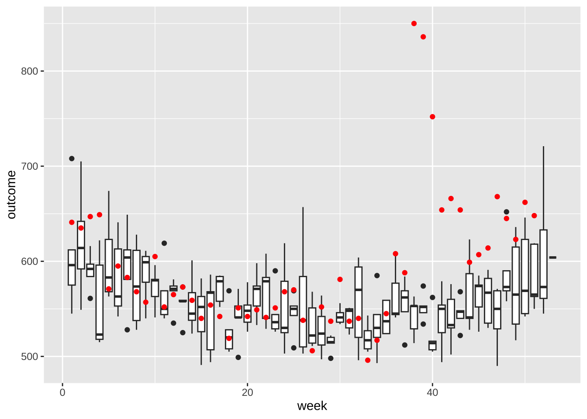
- If we look at 2017 data before September and compare each week to the average from 20022016. What percent are below the median?
totals |>
filter(year(date) < 2017) |>
group_by(week) |>
summarize(avg = median(outcome)) |>
left_join(filter(totals, year(date) == 2017), by = "week") |>
filter(date < make_date(2017,9,1)) |>
summarize(mean(outcome < avg))# A tibble: 1 × 1
`mean(outcome < avg)`
<dbl>
1 0.6- Why are 2017 totals somewhat below-average? Plot the population in millions against date. What do you see?
weekly_counts |> filter(week == 1) |>
group_by(date) |>
summarize(population = sum(population)) |>
ggplot(aes(date, population/10^6)) +
geom_line() +
labs(title = "Population of Puerto Rico: 20022017",
x = "Date", y = "Population (millions)") +
theme_bw()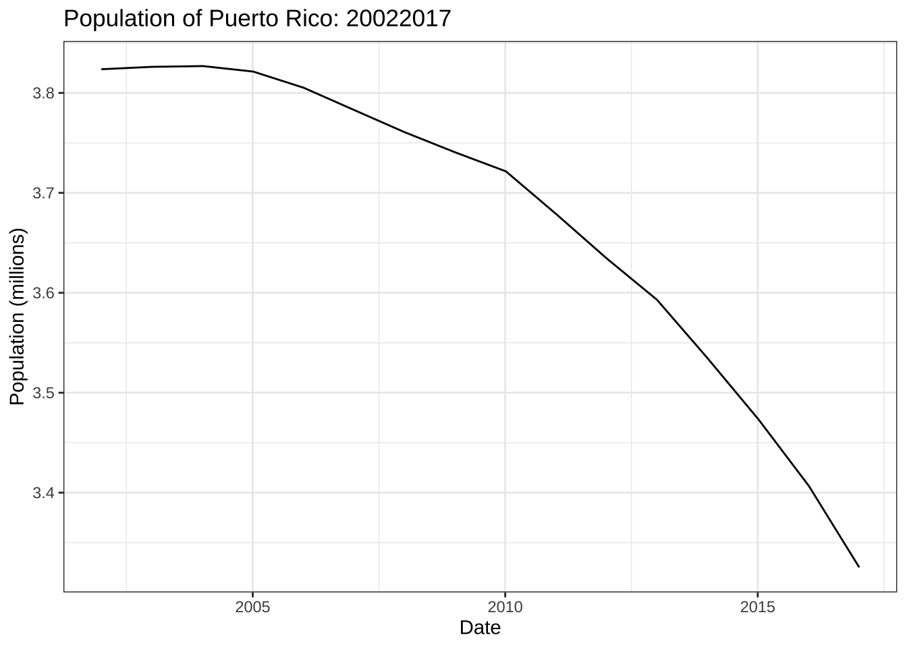
- When comparing mortalisty across populations of different sizes, we need to look at rates not totals. Because the population is decreasing, this is particularly important. Redo the boxplots but for rates instead of totals.
rates <- weekly_counts |>
group_by(date, week) |>
summarize(rates = sum(outcome)/sum(population), .groups = "drop")
rates |> filter(year(date) < 2007) |>
ggplot(aes(week, rates, group = week)) +
geom_boxplot() +
geom_point(data = filter(rates, year(date) == 2017), color = "red")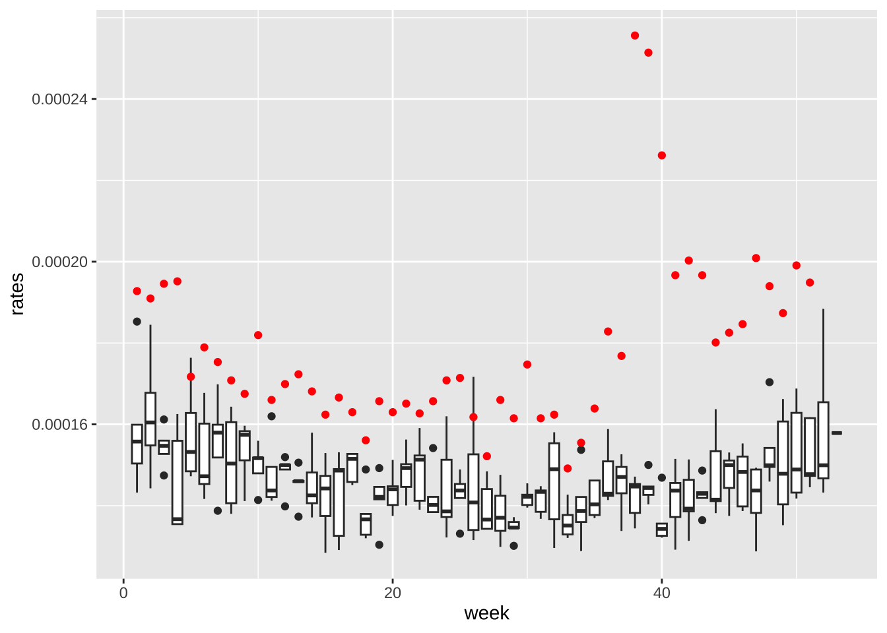
- Now the rates are all way above average! What is going on? Compute and plot the population sizes against year for each sex of the following age groups: 0-19, 20-39, 40-59, 60+. Describe what you see in this plot then explain why 2017 has higher average death rates.
library(forcats)
weekly_counts |>
filter(week == 1) |>
mutate(agegroup = fct_collapse(agegroup,
"0-19" = c("0-4","5-9", "10-14", "15-19"),
"20-39" = c( "20-24", "25-29", "30-34", "35-39"),
"40-59" = c("40-44", "45-49", "50-54", "55-59"),
other_level = "60+")) |>
group_by(date, agegroup, sex) |>
summarize(population = sum(population), .groups = "drop") |>
ggplot(aes(date, population/10^5, color = sex)) +
geom_line() +
facet_wrap(~agegroup) +
theme_bw()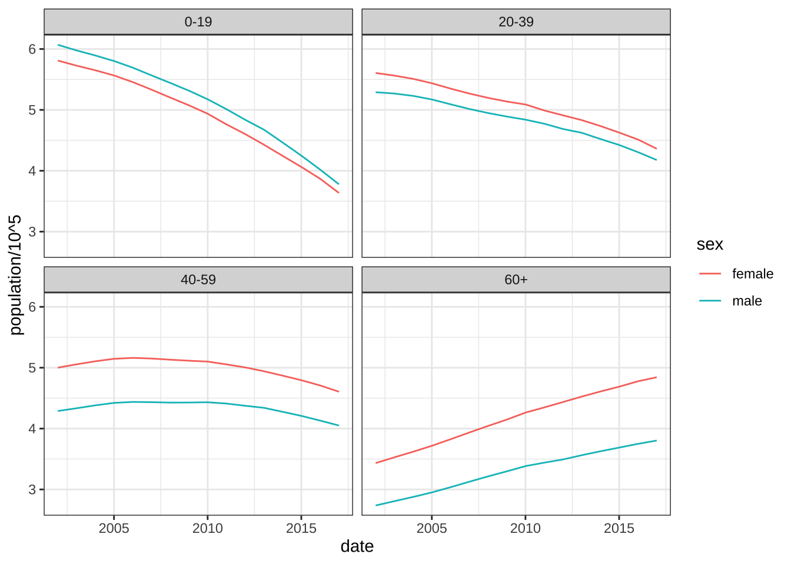
- Compute the death rates (deaths per 1,000 per year) by the agegroups for each year 20022016. Use a transformation of the y-axis that permits us to see the data clearly. Make a separate plot for males and females. Describe in two sentences what you learn.
weekly_counts |>
filter(year(date) < 2017) |>
mutate(year = year(date)) |>
group_by(year, agegroup, sex) |>
summarize(rate = mean(outcome)/population[1]*1000*52, .groups = "drop") |>
ggplot(aes(year, rate, color = agegroup)) +
geom_line() +
scale_y_log10() +
facet_wrap(~sex)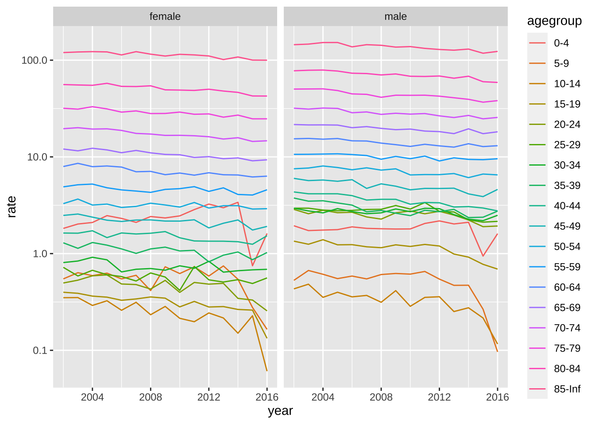
- Repeat the above but use
facet_wrapwithscales = "free_y"to get a closer look at the patterns for each age group. In this case use color to distinguish the sexes. Describe the pattern observed for the death rate over time.
weekly_counts |>
mutate(year = year(date)) |>
filter(year < 2017) |>
group_by(year, agegroup, sex) |>
summarize(rate = mean(outcome)/population[1]*1000*52, .groups = "drop") |>
ggplot(aes(year, rate, color = sex)) +
geom_line() +
scale_y_log10() +
facet_wrap(~agegroup, scales = "free_y")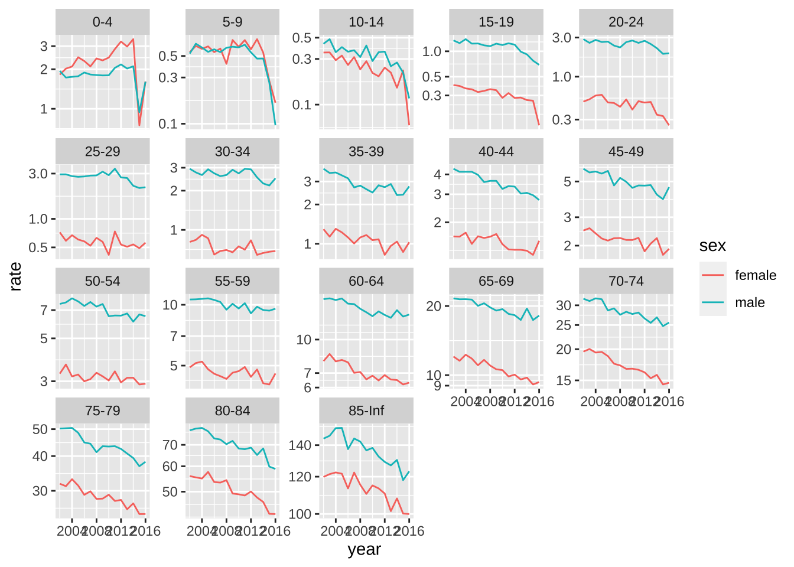
20.5 Linear models
- We are going fit a linear model to account for the trend in death rates to obtain an more appropriate expected death rate for each agegroup and sex. Because we are fitting a linear model, it is preferable to have normally distributed data. We want the number of deaths per week to be larger than 10 for each group. Compute the average number of deaths per week by agegroup and sex for 2016. Based on these data, what agegroups do you recommend we combine?
counts |> filter(year(date) == 2016) |>
group_by(agegroup, sex) |>
summarize(value = sum(outcome)/52, .groups = "drop") |>
pivot_wider(names_from = sex)# A tibble: 18 × 3
agegroup female male
<fct> <dbl> <dbl>
1 0-4 2.37 2.52
2 5-9 0.308 0.173
3 10-14 0.115 0.231
4 15-19 0.288 1.62
5 20-24 0.596 4.52
6 25-29 1.19 4.67
7 30-34 1.42 4.5
8 35-39 2.19 5.40
9 40-44 3.23 5.27
10 45-49 4.25 9.17
11 50-54 6.96 13.4
12 55-59 10.7 18.9
13 60-64 14.1 23.8
14 65-69 19.6 31.2
15 70-74 25.6 36.3
16 75-79 31.7 38.5
17 80-84 39.2 38.7
18 85-Inf 96.7 70.0 - Create a new dataset called
datthat collapses the counts into agegroups with enough deaths to fit a linear model. Remove any week with MMWR week 53 and add a columntthat includes the number of weeks since the first week in the first year.
dat <- weekly_counts |>
mutate(agegroup = fct_collapse(agegroup,
"0-44" = c("0-4","5-9", "10-14", "15-19", "20-24",
"25-29", "30-34", "35-39", "40-44"),
"45-54" = c("45-49", "50-54"))) |>
group_by(date, agegroup, sex) |>
summarize(population = sum(population), rate = sum(outcome)/population, .groups = "drop") |>
mutate(week = epiweek(date)) |>
filter(week <= 52) |>
mutate(t = (as.numeric(date) - as.numeric(min(date)))/7)- Write a function that receives a data frame
tab, fits a linear model with a line for the time trend, and returns a data frame with 2017 data including a prediction.
fit <- function(tab){
fit <- lm(rate ~ t + as.factor(week), data = filter(tab, year(date) < 2017))
newdata <- filter(tab, year(date) == 2017)
pred <- predict(fit, se.fit = TRUE, newdata = newdata)
newdata$sd <- summary(fit)$sigma
newdata$exp <- pred$fit
newdata$se <- pred$se.fit
return(newdata)
}- Use the
group_modifyfunction to fit this model to each sex and agegroup. Save the results inres.
res <- dat |>
group_by(agegroup, sex) |>
group_modify(~fit(.x)) |>
ungroup()- For agegroup and by sex, plot the expected counts for each week with an error bar showing two standard deviations and in red the observed counts. Does the model appear to fit? Hint: Look to see if the red dots are inside the intervals before the hurricane.
res |>
ggplot(aes(week, exp*population)) +
geom_errorbar(aes(ymin = (exp - 1.96*sd)*population, ymax = (exp + 1.96*sd)*population)) +
geom_point() +
geom_point(aes(week, rate*population), color = "red") +
facet_grid(agegroup~sex, scales = "free_y") 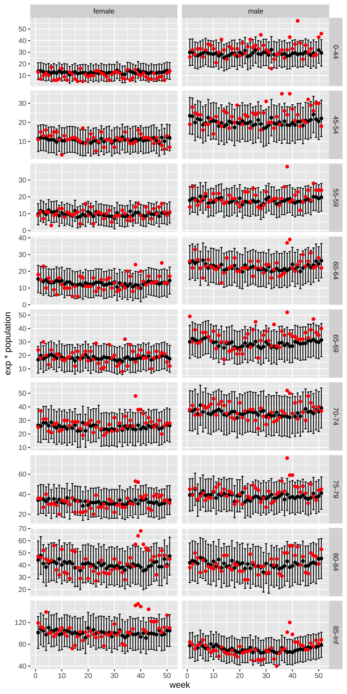
- Now estimate weekly excess deaths for 2017 based on the rates esimated from 20022016 but the population sizes of 2017. Compare this to estimated standard deviation observed from year to year once we account for trends.
excess <- res |>
group_by(week) |>
summarize(exp = sum(population*exp),
obs = sum(population*rate),
sd = sqrt(sum(population^2*sd^2))) |>
mutate(excess = obs - exp)
sd <- unique(excess$sd)
excess |>
ggplot(aes(week, excess)) +
geom_point() +
geom_hline(yintercept = 0, lty = 2) +
geom_hline(yintercept = c(-2,2)*sd, lty = 2, color = "red") +
theme_bw()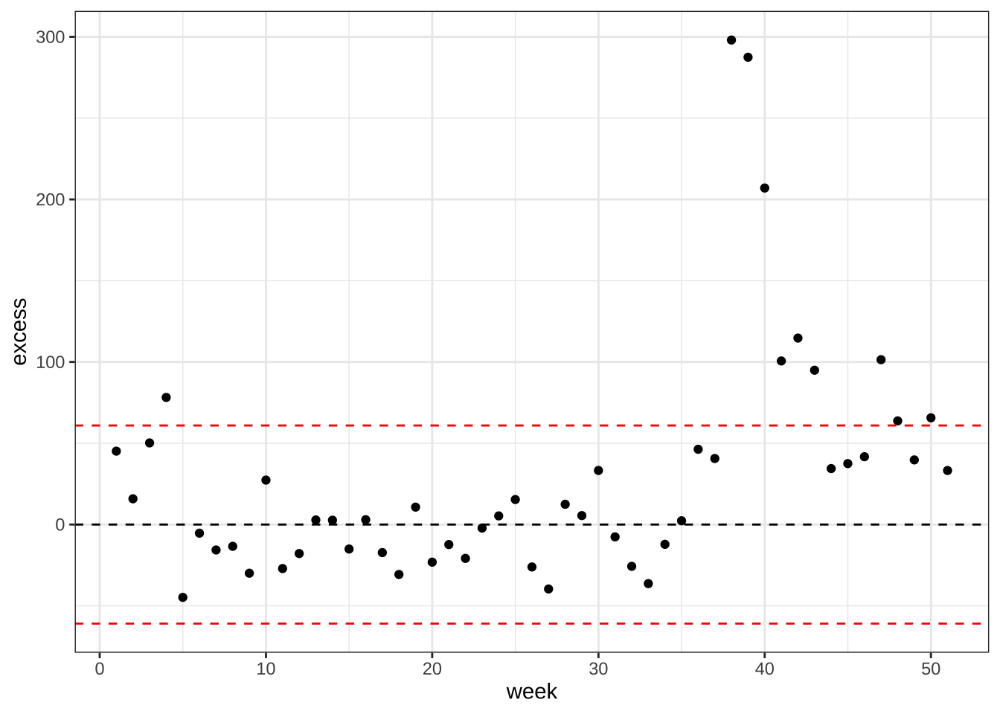
- Plot cummulative excess death for 2017 including a standard error.
excess |>
mutate(excess = cumsum(excess), sd = sqrt(cumsum(sd^2))) |>
ggplot(aes(week, excess)) +
geom_ribbon(aes(ymin = excess - 2*sd, ymax = excess + 2*sd), alpha = 0.5) +
geom_line() +
geom_hline(yintercept = 0, lty = 2) +
theme_bw()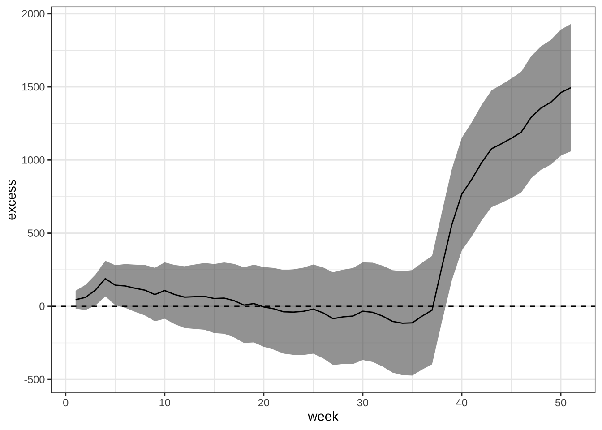